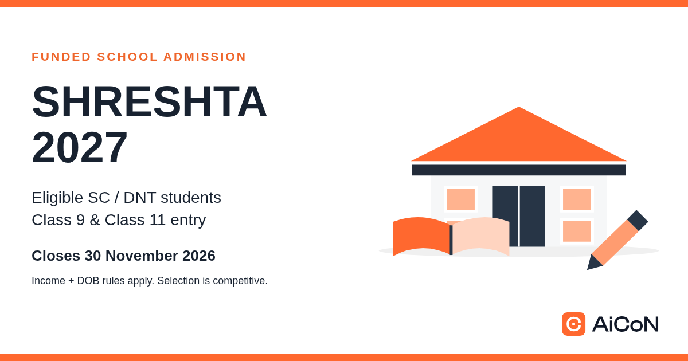
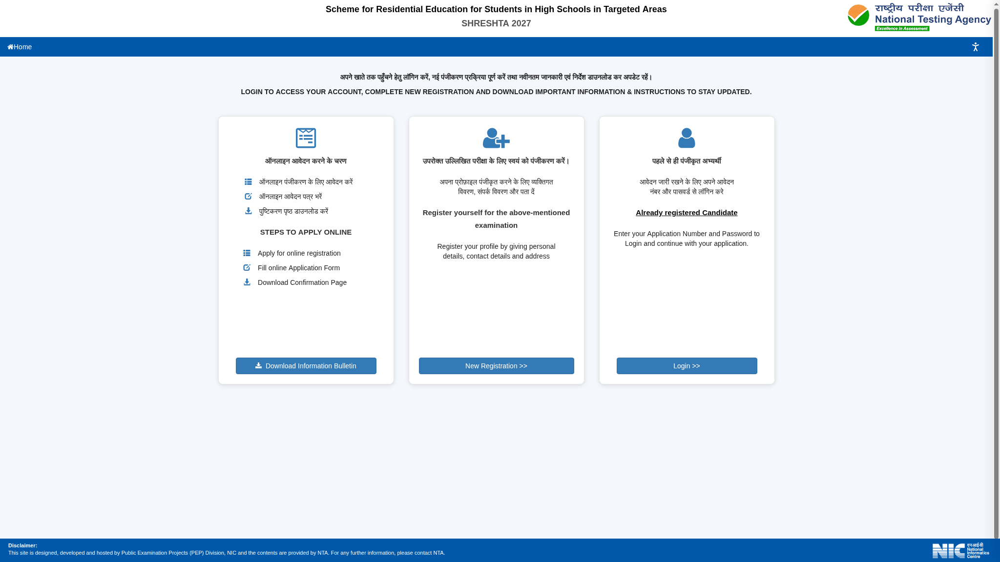
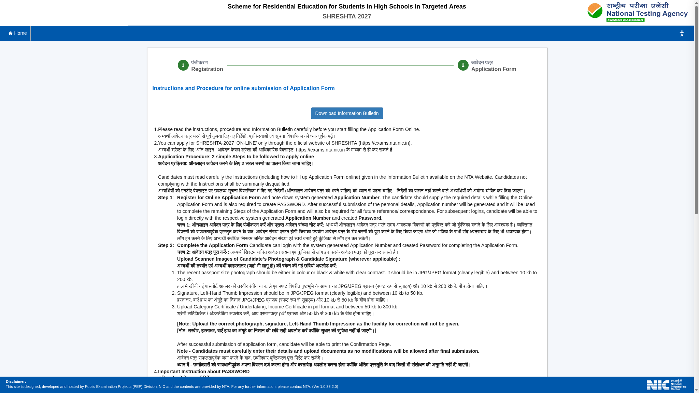
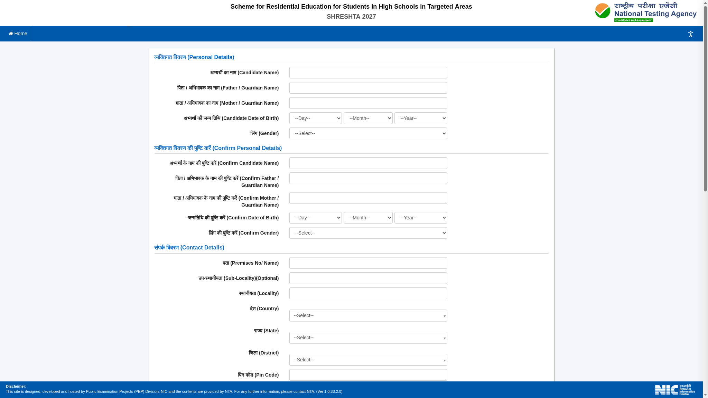

SHRESHTA 2027: funded residential-school admission for eligible SC and DNT students
Students studying in Class 8 or Class 10 in 2026-27 may have a route to a funded place in a private residential school for 2027-28. NTA has opened SHRESHTA (NETS) 2027 applications for eligible Scheduled Caste students and eligible De-notified Tribe students who are not covered under SC, ST or OBC categories. The exam fee is nil. Selection is competitive: applying does not guarantee admission.

The current official notice says the Central Government funds the entire cost of education for selected students. It does not establish a personal cash scholarship for every applicant. We have not verified a complete 2027-28 school-wise list of covered incidental expenses, parent contributions or withdrawal conditions. Check the current admission terms before accepting a school place. The bulletin explicitly says candidates travel to the examination centre at their own cost.
Who can apply?
The current information bulletin sets out these conditions. Check the category, income, present class and exact date-of-birth window together; meeting only one condition is not enough.
- Category: Scheduled Caste (SC), or De-notified Tribe (DNT) not covered under SC, ST or OBC. This is not a general-category scholarship and not an opportunity for every student belonging to an ST or OBC category.
- Annual parental income: up to Rs 2.5 lakh.
- Class 9 entry in 2027-28: currently studying in Class 8 during 2026-27; born between 1 April 2011 and 31 March 2015.
- Class 11 entry in 2027-28: currently studying in Class 10 during 2026-27; born between 1 April 2009 and 31 March 2013.
Boys and girls can apply. The opportunity is all-India, including eligible students from Kerala. The notice describes about 2,400 places: 2,160 for SC students and 240 for the specified DNT group. These are national indicative numbers, not a guaranteed quota for a particular district or school. Use the date ranges above rather than rounding a child's age.
The dates to save
- Application window: 14-30 November 2026, closing at 11:50 pm on 30 November.
- Correction window: 2-4 December 2026, until 11:50 pm on 4 December. Only the permitted particulars can be corrected; do not assume every field or upload can be replaced.
- Exam-city information: scheduled for 20 December 2026.
- Admit card: scheduled for 3 January 2027.
- Entrance exam: Sunday, 10 January 2027, 2:00-5:00 pm.
- Results: date to be announced on the official website.
These are the dates in the current NTA notice and bulletin. Check the portal for changes. Finish early enough to fix unreadable scans, contact verification or a slow connection. Registering a profile alone does not complete the application.
What does the entrance exam involve?
SHRESHTA NETS 2027 is a three-hour, pen-and-paper OMR exam. The question paper is bilingual in Hindi and English, not Malayalam. The bulletin lists 100 multiple-choice questions: 25 each in Mathematics, Science, Social Science and General Awareness/Knowledge. Each correct answer receives four marks, for a maximum of 400. Incorrect and unanswered questions receive zero; there is no negative marking.
Use the class-specific syllabus in the 2027 bulletin to prepare. Do not rely on a coaching advertisement or an older exam video for the current syllabus, dates or category rules. The English question text is final if a translation is ambiguous.
Documents and scan sizes to prepare
Keep the student's correct personal details, current class and educational details, category and parental-income evidence ready. The bulletin specifies these uploads:
- Recent photograph: JPG/JPEG, 10-200 KB. Colour or black and white, clear contrast, white background and 80% of the face visible, including ears, without a mask.
- Student's signature: JPG/JPEG, 10-50 KB.
- Left-hand thumb impression: JPG/JPEG, 10-50 KB.
- Category certificate or permitted undertaking: PDF, 50-300 KB.
- Income certificate: PDF, 50-300 KB.
Do not infer that every certificate can be deferred merely because one upload label mentions an undertaking. Check the bulletin's applicable format and ask official support if the student's certificate is pending. Use the student's own photograph, signature and thumb impression, with readable scans. Keep originals for verification. Compressing a file is useful only if names, dates, seals and numbers remain legible.
How to start on the real application site

- Start at NTA's SHRESHTA page. Open the official portal linked below, read the 2027 notice and information bulletin, then follow its application-form link. The actual application opens on examinationservices.nic.in. Starting from NTA avoids a fake registration site or an old year's form.
- Choose New Registration. Read the instructions and the declaration before proceeding. The landing page separates new registration from login for an existing application. Do not create duplicate applications because you forgot a password or application number.
- Enter and confirm personal details. The blank registration form asks for the student's name, father/guardian and mother/guardian names, date of birth and gender, followed by a second confirmation of those details. Match the supporting records rather than using an informal spelling.
- Give accessible contact details and addresses. The form asks for present and permanent addresses, mobile number and confirmation. Email is visibly marked optional. It says OTPs will be used for contact verification. Use contact details the student or parent/guardian can continue accessing through counselling. Never share an OTP or password with an unsolicited caller.
- Create and safely retain the login. Choose a password under the portal's rules. After successful registration, retain the generated application number. Do not publish it in a social-media comment or send it to an unofficial helper.
- Log in and complete the application. Enter the correct class and educational details, select four examination cities in priority order, and upload the required scans. Review every field and document before final submission.
- Download the confirmation page. Save and print it after successful completion. Keep the login and supporting documents. The bulletin says documents and the confirmation page do not need to be posted, emailed or sent by WhatsApp to NTA.


Kerala exam-city choices
The bulletin's city list includes Ernakulam (Kochi), Kozhikode, Palakkad and Thiruvananthapuram. Applicants must choose four cities from the available list in priority order. A preferred city is not guaranteed: NTA can allocate a different city for administrative or logistical reasons. Check the actual city intimation and admit card before making travel arrangements. The city notice is not the admit card.
After the test: selection is not automatic
NTA's role is registration, conducting the test, preparing results and hosting the scorecard. Admission follows the applicable Ministry/school admission policy and document verification. A scorecard, application number or a qualifying result is not, by itself, a school-allotment letter. Follow the official counselling and admission announcements after the result, and read the final school's residential arrangements and conditions with a parent or guardian.
We have not imported earlier years' school-fee caps or rules into the 2027-28 intake. Ask for the current written terms on education and hostel coverage, uniforms, books, travel, personal expenses and leaving the school early before accepting an offer. Do not take a loan or pay an agent based on an assumed benefit.
Walkthrough videos and official help
No reliable English or Malayalam step-by-step video for this exact 2027 application was verified in our search. The guide therefore uses current official instructions and desktop screenshots rather than linking an older tutorial. For an eligibility, certificate or portal question, contact NTA through the details in the current notice: shreshta@nta.ac.in, 011-40759000 or 011-69227700.
There is no examination fee. NTA warns against people who promise selection in return for money or collect applicants' personal information under a false claim of official help. Admission is merit-based; an agent cannot guarantee it.
Official sources
- NTA SHRESHTA portal: start here and check new notices.
- NTA application-live announcement.
- Official application-form link page: follow this to the NIC application.
- Public notice dated 14 November 2026: application dates, exam schedule, indicative places and funding statement.
- SHRESHTA NETS 2027 information bulletin: eligibility, syllabus, scan sizes, cities and application rules.
- Department of Social Justice and Empowerment scheme page: scheme context; do not substitute older downloads for current admission terms.
AiCoN independent guide, checked 17 November 2026. Not an official admission notice, an eligibility decision or a promise of selection. Always follow the latest NTA and admission-authority instructions.